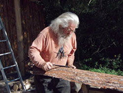

Build A Home For $10,000 In 10 Days!
With this easy, low-cost round-timber technique, you can do it.
By Chris McClellan
February/March 2009
For half a century, William Castle has been building bridges, cabins and shanties of all shapes and sizes. His favorite projects are right in his own yard. Woodland areas such as that of his native Belmont, N.Y., often have an abundance of “junk” timber that has little commercial value because of its small diameter, twisted grain or other imperfections. The modified timber-framing method Castle has developed lets him quickly and easily turn this low-cost, local resource into beautiful houses, such as his daughter’s cabin (see the Image Gallery). The shell of the 1,000-square-foot house was built over an existing foundation by a crew of three to four adults and two children in less than 10 days - for less than $10,000!
If You Build It …
Thirty years ago “Pollywogg Hollër,” as Bill and Barb Castle call their 30 acres surrounded by forest, began as a project to bring the family together. Bill had his own bridge building company, a seven-day-a-week work ethic and almost no connection to his growing children.
At Barb’s insistence, Bill began taking time off, and over the course of three summers, they and their three teenage children built a 20-foot-by-30-foot log cabin in their back woods. They dug the well and foundation by hand, dragged logs out of the woods with an old tractor, peeled the logs with a drawknife and placed them with the help of a homemade crane.
Other than mortar, hardware and roofing, all the materials in that cabin came from the land. Over time it became their home. Now, it’s a rustic bed and breakfast “eco-retreat” that they run with their son Mikael - complete with solar power, a sauna, bathhouse, picnic pavilion, wine bar and wood-fired pizza oven. There’s even a stage for weddings and concerts. Most importantly, that cabin brought their family together.
As we walk through the enchanted village Castle has built, he points out the different local woods and the uses he puts them to: There are footbridges of larch (aka tamarack), which he calls “the poor man’s cedar.” Fence posts are rot-resistant black locust. Hemlock is used for sheathing; red oak, for floors; and fir, for log cabin walls.
Castle has used cedar for roof shakes in the past, but sustainably harvested cedar is getting harder to find at any price. These days Castle prefers to build low maintenance metal roofs or “living roofs” with a rubber membrane covered with moss and wildflowers.
A Simpler Timber-framing Technique
Castle’s building technique has evolved to allow him to do more with less. Hand building a log cabin over three summers is a great way to spend quality time with your children, but the process uses more time and material than timber framing a similar space. Also, while Castle prefers to work with round timber, the natural curves and variations in tree formation that give round pole construction its beauty also make it difficult and time consuming, with complex cutting and matching. So using low-cost material only partially makes up for the extra effort.
Many timber framers mill timbers flat and square on all sides. Timbers trimmed square and straight are easier to work with, especially when it comes to cutting joints or attaching sheathing to the outside of the timber frame. The downside is that square-timber framing usually requires expensive woods, such as white oak, that are dimensionally stable and don’t tend to twist as they dry.
Castle has found a compromise that gives him the benefits of both techniques - a kind of “three-quarter-round timber frame.” He simplifies his cutting and fitting by milling one or two sides of each log flat, but he leaves the other sides “in the round,” which keeps the wood stronger and less likely to twist. This allows him to use smaller trees of non-premium species, even with minimal drying.
A three-quarter-round timber-frame is assembled with flat sides of the wood facing out, making it easy to square and plumb the sides of the building. Milling only the surfaces of the wood that will be covered by the building sheathing also saves one-half to three-quarters of the milling time, while retaining the rustic beauty of the round wood where you can see it on the interior walls.
The system of joinery Castle has developed to work with his three-quarter-round timbers is quick, easy and forgiving. He starts by squaring the round wood at the location of the joint with a radial arm saw and a chisel. A chain saw will do the job a lot quicker, but the visual quality of the joint suffers.
Squaring the timber at the joints makes it easier to lay out cross pieces and knee braces. The resulting edge between the round and square portions of the timber also wedges the wood together in a way that adds strength to the joint. The connection is secured by countersinking one or two half-inch lag screws through the “meat” of both timbers. (See the Image Gallery.)
The flat surfaces of the three-quarter-round timber frame also make it easier to attach sheathing and roofing with a minimum of cutting and fitting. Castle usually sheathes his buildings with a “sandwich” of rough-sawn boards around a core of 2 inches to 4 inches of foam insulation, making these buildings extremely tight and well-insulated. (See Castle House Diagram.)
More Tips for the Technique
It is worth noting that designing a building on a 4-foot-by-8-foot module (open space between timbers of 4-feet-by-8-feet on center) has a number of benefits. First, the timber frame will cover most, if not all, of the joints if you choose to use drywall as the interior layer of your sheathing sandwich, saving time in the finishing process. The drywall even can be painted before it is hung, with no taping or masking!
Not one to waste anything, Castle’s workshop is actually sheathed with “log siding” made from the cut-offs or “slab wood” left over from milling the frame and interior sheathing for the building.
The wood in all of Castle’s buildings was selectively cut from his property or within a few miles. Compared to clear-cutting the forests of Canada and trucking in the lumber, local wood has a significantly smaller ecological footprint. The practice also supports the local economy.
If you use a lot of wood like Castle does, it can even make sense to purchase your own mill. Because Castle also carves large tables from single slabs of wood, he has a custom-made mill that can turn a 5-foot-diameter tree into lumber.
The Castle family has built two houses and a wood shop using Castle’s three-quarter round timber frame method. It took a small crew a little under 10 days to rough in each building. And each of these house shells was completed for less than $10,000, which comes out to about $10 per square foot!
Using the same technique, Castle and a helper are building a workshop where he can build his trademark rustic furniture. Construction has been more time consuming, as the workshop is something of a showpiece with more fancy joinery in the stairs and porches, but even with temporary Styrofoam doors it is easily heated with a small, electric space heater.
But it may be a while before Castle gets back to his furniture: Before he disappears into the workshop, he has promised his wife a retirement cabin built along the same lines.
 CHRIS McCLELLAN The shell of this modified timber-frame house was built in 10 days. |
CHRIS McCLELLAN Building this log cabin was a family project nearly 30 years ago. |
CHRIS McCLELLAN Joints are secured with half-inch lag screws. |
|
CHRIS McCLELLAN Although these logs look round, they’re milled flat on one or two sides. |
CHRIS McCLELLAN This building technique uses an “insulation sandwich,” which is energy-efficient. |
CHRIS McCLELLAN Pollywogg Hollër, built by Bill Castle and his family, has grown from one cabin into an “eco-retreat.” |
|
 MIKAEL CASTLE Much of Castle's woodworking art is done by hand. |
WILLIAM CASTLE Castle uses thick slabs of wood cut on a custom-built mill to create artistic furnishings. |
WILLIAM CASTLE Castle's work includes custom carving. |